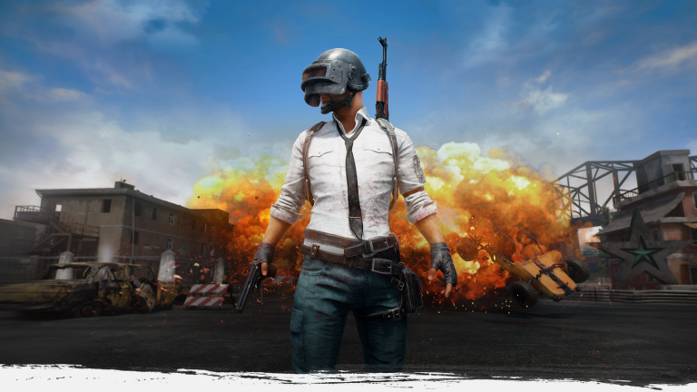
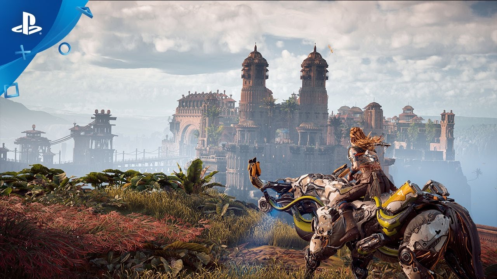

Mes jeux
fornite
 Fortnite est un jeu vidéo de survie et de construction en coopération développé par People Can Fly et Epic Games. Le jeu est disponible en accès anticipé payant depuis le 25 juillet 2017 sur Windows, macOS, PlayStation 4 et Xbox One. La sortie officielle est prévue pour 2018.
Fortnite est un jeu vidéo de survie et de construction en coopération développé par People Can Fly et Epic Games. Le jeu est disponible en accès anticipé payant depuis le 25 juillet 2017 sur Windows, macOS, PlayStation 4 et Xbox One. La sortie officielle est prévue pour 2018.
Le jeu dispose initialement d'un mode de jeu en joueur contre l'environnement intitulé « Save the World ». En septembre 2017, un mode autonome en joueur contre joueur et jouable gratuitement intitulé « Battle Royale » est ajouté au jeu.
pubg
Parachuté d'un avion cargo militaire sans aucun équipement, le joueur doit affronter 99 autres joueurs au maximum sur un terrain inscrit dans une carte de 8×8 km, avec pour but final d'être le dernier survivant. Sitôt arrivé au sol, le joueur doit trouver le plus rapidement possible des armes, des munitions et de l'équipement pour atteindre son objectif. Il peut également trouver des bidons d'essence, destinés à alimenter des véhicules qu'il pourra utiliser pour se déplacer plus rapidement sur le terrain. Une zone mortelle apparaît de façon aléatoire au bout de 5 minutes de jeu, sous la forme d'un cercle en dehors duquel tout joueur subit des dégâts réguliers. Le cercle rétrécit de plus en plus, forçant ainsi les joueurs à se rapprocher les uns les autres du centre de la zone encore libre, et donc à s’affronter. Chaque partie dure un maximum de 30 minutes, la zone se réduisant rapidement à une toute petite portion de terrain au fur et à mesure des éliminations, et ce jusqu’au duel final.
Chaque action en jeu, comme toucher, sonner ou tuer un adversaire, ainsi que le classement final, rapportent de la monnaie en jeu qui permet d'acheter des habits et des accessoires pour améliorer l'apparence du personnage. Un bonus est accordé aux dix derniers survivants, ainsi qu'une dot plus substantielle pour le vainqueur.
Doté de la seule île russe d'Erangel à l'origine, le jeu se vit doté d'une seconde carte, le désert latino de Miramar, à l'occasion de la sortie de la version 1.0 le 20 décembre 2017
tekken7
 Dans cet épisode, deux combattants s'affrontent dans un environnement 3D destructible (limité à certains murs et sols). Le but est de réduire la barre de santé de l'adversaire à 0 en lui assénant des coups. Le jeu attribue une touche à chaque bras et jambe du personnage. Il est alors possible de créer des enchaînements de plusieurs coups en essayant de les combiner, créant ainsi des combos. Chaque personnage a également la possibilité d'envoyer son adversaire dans les airs et ainsi l'enchaîner sans que celui-ci ne puisse riposter. Ce système s'appelle le juggle.
Dans cet épisode, deux combattants s'affrontent dans un environnement 3D destructible (limité à certains murs et sols). Le but est de réduire la barre de santé de l'adversaire à 0 en lui assénant des coups. Le jeu attribue une touche à chaque bras et jambe du personnage. Il est alors possible de créer des enchaînements de plusieurs coups en essayant de les combiner, créant ainsi des combos. Chaque personnage a également la possibilité d'envoyer son adversaire dans les airs et ainsi l'enchaîner sans que celui-ci ne puisse riposter. Ce système s'appelle le juggle.
Le jeu propose plusieurs nouveautés :
Tailspin : Lors d'un juggle le joueur envoie via un coup spécial son adversaire au loin tomber sur le dos, l'empêchant de se relever immédiatement et permettant au joueur de continuer son combo.
Rage Art : Lorsqu'un joueur est en fin de vie, la barre de santé clignote, indiquant que la possibilité d'effectuer un Rage Art. Ce coup permet d'asséner de gros dégâts à son adversaire avec un coup unique et mis en scène (jeu de caméra et effets spéciaux).
Power Crush : Le combattant a la possibilité d'utiliser un coup spécial qui ne peut pas être arrêté. Si l'adversaire frappe à ce moment la, ses coups infligent des dégâts mais il finit quand même par prendre le coup du combattant ayant lancé le Power Crush. Un Power Crush peut être arrêté uniquement par un coup bas.
Rage Drive : Coup spécial (avec un halo bleu) disponible uniquement lorsque la santé de son propre joueur est basse. Il est différent selon chaque personnage et permet d'accomplir une action non disponible normalement. Cela permet selon le cas d'envoyer son adversaire sur un mur, de le mettre directement au sol, de prolonger un combo ou de sortir un combo unique.
horizon zero down
Horizon Zero Dawn prend place dans un univers post-apocalyptique dominé par des créatures mécanisées, en particulier des animaux robotiques1. Le jeu se déroule donc dans un futur éloigné de mille ans, où la civilisation humaine s'est effondrée et où les créatures robotiques, devenues les plus puissantes en ce monde, dominent2. La région visitée dans le jeu est indéterminée, mais plusieurs éléments du DLC The Frozen Wilds la situent près du parc de Yellowstone.